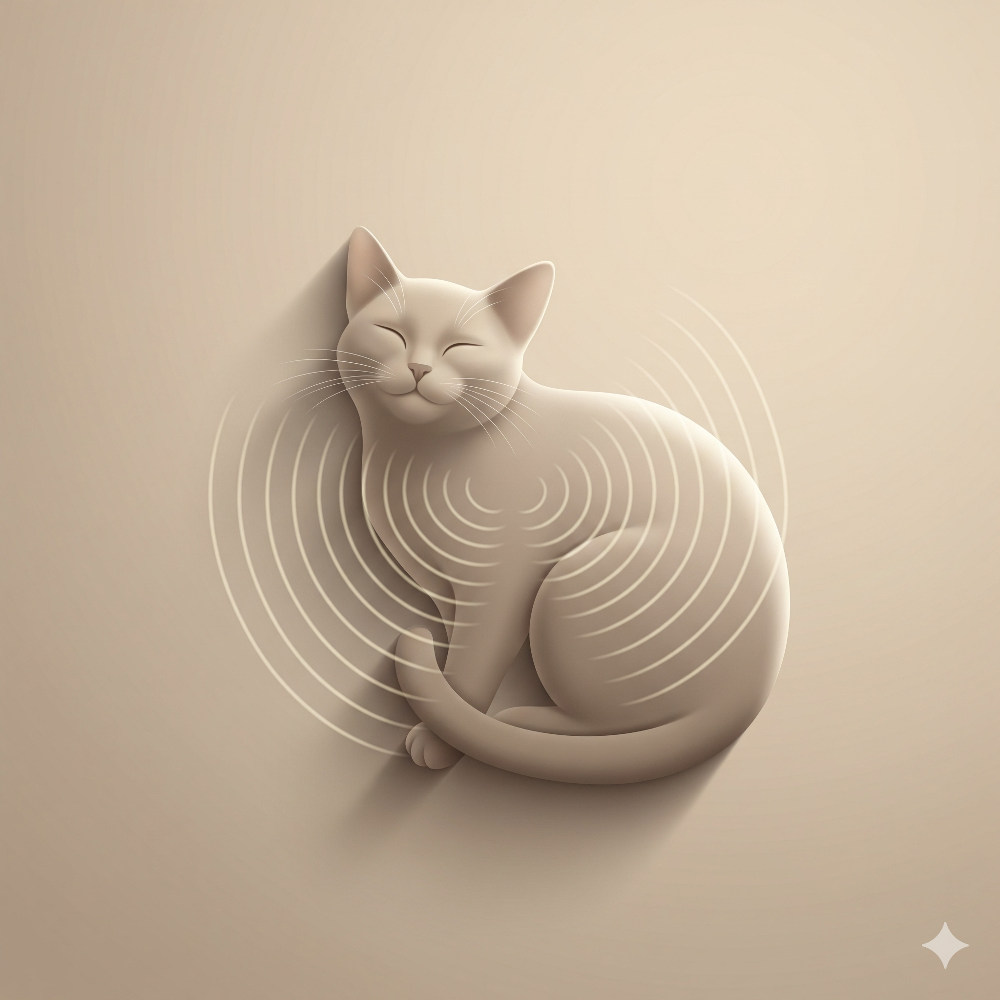

O Ronronar dos Gatos

O Ronronar dos Gatos: Desvendando os Mistérios de um Som que Encanta e Alerta
Quem nunca se derreteu ao ouvir o ronronar suave de um gatinho? Esse som hipnotizante, que parece uma pequena máquina de felicidade, esconde segredos fascinantes que a ciência está apenas começando a desvendar. Mas atenção: nem sempre esse som significa que está tudo bem com seu felino!
O Que Realmente Acontece Quando Seu Gato Ronrona?
A Descoberta que Mudou Tudo
Prepare-se para uma surpresa: durante décadas, os cientistas acreditavam que o ronronar era como um interruptor neurológico - o cérebro mandava o sinal e pronto! Mas uma pesquisa incrível de 2023, publicada na revista Current Biology, virou tudo de cabeça para baixo.
Os pesquisadores da Universidade de Viena descobriram algo impressionante: as cordas vocais dos gatos podem produzir o ronronar sozinhas, sem precisar de "ordens" do cérebro! É como se elas tivessem vida própria. Esse mecanismo funciona de forma parecida com aquela voz rouca que alguns cantores fazem no rock.
Como Funciona Essa "Máquina de Ronronar"
Imagine o seguinte: dentro da garganta do seu gato existe um sistema super sofisticado que trabalha 24 horas por dia. As pregas vocais vibram de forma especial, criando aquelas frequências mágicas entre 25 e 150 Hz. E não para por aí - o processo envolve músculos especiais e até mesmo a respiração trabalha em conjunto para manter o ronronar constante, tanto na inspiração quanto na expiração.
Os Superpoderes Secretos do Ronronar
Para os Próprios Gatos: Uma Farmácia Natural
Aqui vem a parte mais impressionante: o ronronar é literalmente um remédio natural que os gatos carregam dentro de si!
- Ossos Mais Fortes: As vibrações do ronronar estimulam células chamadas osteoblastos, que constroem ossos novos. É por isso que gatos se recuperam tão bem de fraturas - eles têm sua própria "fisioterapia" interna funcionando o tempo todo.
- Alívio Natural da Dor: O ronronar funciona como um analgésico natural, bloqueando sinais de dor no sistema nervoso. Por isso muitos gatos ronronam quando estão machucados - não é porque estão felizes, mas porque estão se "automedicando"!
- Exercício Preguiçoso: Como os gatos dormem quase o dia todo, o ronronar mantém músculos e ossos ativos sem gastar energia. É como fazer exercício dormindo!
Para Nós Humanos: Terapia de Graça
Se você tem um gato, provavelmente já percebeu como é relaxante ouvi-lo ronronar. A ciência comprova que não é impressão sua:
- Diminuição do Estresse: O ronronar reduz nossos níveis de cortisol (o hormônio do estresse) e libera endorfinas.
- Coração Mais Calmo: Estudos mostram que conviver com gatos ronronando pode ajudar a baixar a pressão arterial. O contato físico ainda libera oxitocina, o famoso "hormônio do abraço".
- Aplicações Médicas: Hospitais estão começando a usar terapia com gatos em tratamentos complementares para ansiedade, depressão e até mesmo recuperação de fraturas.
⚠️ ATENÇÃO: Quando o Ronronar é um Sinal de Alerta
Nem sempre é felicidade! Gatos frequentemente ronronam quando estão:
- Com dor: Machucados ou doentes costumam ronronar para aliviar desconforto.
- Estressados ou ansiosos: Mudanças de ambiente ou visitas ao veterinário.
- Gravemente doentes: Em estado terminal ou com doenças graves.
Como Identificar o "Ronronar de Alerta"
Fique atento a sinais físicos e mudanças comportamentais. Exemplo: ronronar constante com perda de apetite, respiração ofegante, isolamento repentino, resistência ao toque.
A Linguagem Secreta do Ronronar
Diferentes tipos de ronronar para diferentes situações:
- Social: Relaxado, suave, ritmado.
- De solicitação: Misturado com miados, agudo e insistente ("me dá comida, humano!").
- De autoconforto: Constante e tremulado, usado para se acalmar.
Curiosidades que Vão te Surpreender
- Leões e tigres não ronronam como gatos domésticos.
- Pumas ronronam igual aos gatos de casa.
- Cada gato tem seu ronronar único, como uma impressão digital sonora.
Aplicações Práticas
Monitore mudanças, observe o contexto, aproveite o ronronar para relaxamento. Na medicina, dispositivos de vibroterapia estão sendo desenvolvidos com base nas frequências do ronronar.
O Futuro da Pesquisa
Estudos buscam aplicações em medicina regenerativa, saúde mental e biomimética avançada.
Reflexões Finais
O ronronar é muito mais que um som fofo — é uma janela para a alma felina. Entender sua linguagem nos torna tutores mais conscientes e atentos às necessidades de nossos gatos.
Fontes e Referências Científicas
- Herbst, C. T., et al. (2023). Current Biology.
- Von Muggenthaler, E. (2001). The Journal of the Acoustical Society of America.
- Chen, K. H., et al. (1994). Zhonghua Wai Ke Za Zhi.
- Lyons, L. A. (2024). Journal of Veterinary Behavior.
- Scientific American (2024).
- Science World (2022).
- Library of Congress (2023).
- Universidade de Viena - Bioacústica (2023).
Produtos indicados

Kit Mantas Pets
Conjunto macio e aconchegante para manter seu gato quentinho nos dias frios.
Comprar
Cama Suede Cachorro Quente
Cama divertida e confortável que protege seu pet do frio com muito estilo.
Comprar
O Encantador de Gatos
Guia essencial para entender o comportamento felino e melhorar a convivência.
Comprar
O Que o Gato Realmente Está Pensando
Descubra o que se passa na mente do seu gato com este guia fascinante.
Comprar